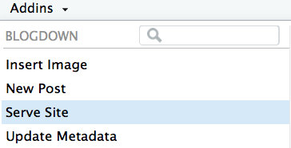

The Tutor House Day 02 Why Netlify?
Why Netlify?
Using Netlify to build websites in the cloud.
By Alison Hill
January 26, 2021
Why Netlify?
Activity
TIME: ⏱ 10 minutes
Go to this repo: https://github.com/apreshill/iyo-apero
Click on the “Deploy to Netlify” button 🚀
Clone GitHub repo
We just created:
- a full blogdown project…
- containing a Hugo site…
- deployed to Netlify…
- in a remote repository on YOUR GitHub (i.e.,
https://github.com/<you>/iyo-apero; you may have changed the repo name after clicking on the “Deploy to Netlify” button).
To make a local copy on our computer that we can actually work in, we’ll clone that repository into a new RStudio project. This will allow us to sync between the two locations: your remote (the one you see on github.com, and the one continuously deployed by Netlify) and your local desktop.
Use the RStudio IDE project wizard:
-
Open up RStudio to create a new project where your website’s files will live.
-
Click
File > New Project > Version Control > Git. -
Paste the URL from GitHub (either HTTPS or SSH)
-
Be intentional about where you tell RStudio to create this new Project on your workstation.
-
Click Create Project.
Alternatively, do this (but note that it requires a GitHub personal access token):
usethis::create_from_github("apreshill/iyo-apero",
destdir = "/Users/alison/rscratch",
fork = FALSE)
Serve your site locally
Use the serve site add-in from the blogdown package to preview your site:

You should be all set to now commit / push / pull from your personal GitHub repository freely! Every commit to the main branch will trigger your Hugo site to be built and deployed again via Netlify :magic:
File scavenger hunt
You have 10 minutes to get to know this new Hugo site.
How? Meet the here bot! 🔍
Try to use the here bot messages to find the content file that produces the content in this starter site. There are:
- 3 blog posts
- 3 projects
- 3 talks
There are also 3 kinds of “layouts”:
- Single
- Single sidebar
- Single series
See if you can spot all of these! Think of it like an easter egg hunt 🥚